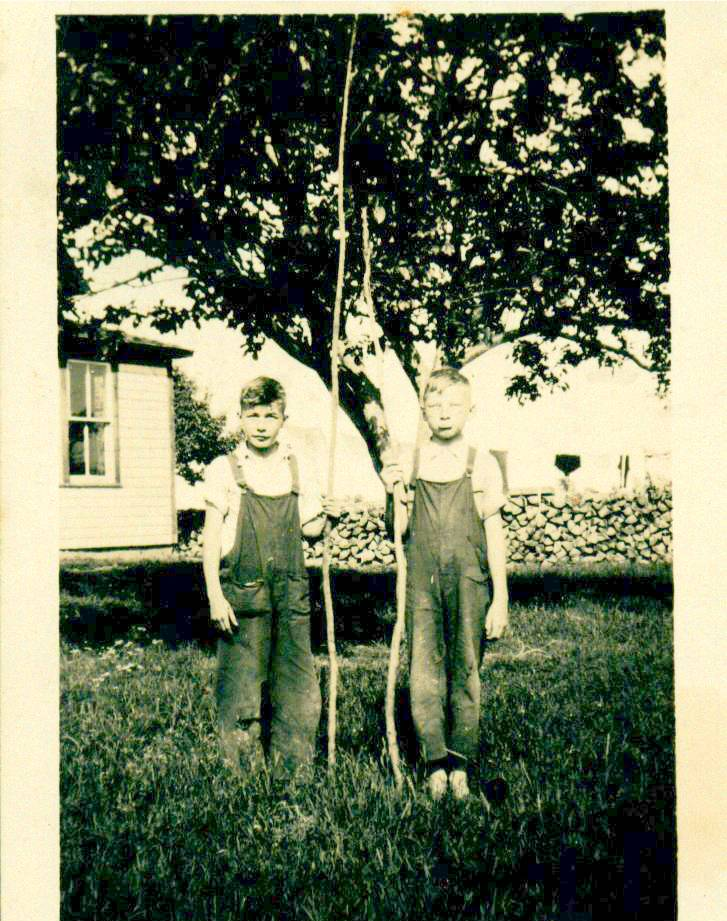

The Family Chronicle
No. 82 November 18, 2004
____________________________________________________________________

George Watling and Don Glendenning preparing for a fishing expedition to the Branch Bridge. See how long and straight George’s fishing rod is, no wonder he caught all the trout. No, I did not forget. I know that this is a repeat photo.
Note:
Normally, I do not use the newsletter to report on family events. The reason for this is that, because of living away from the Miramichi, I am not able to keep in touch with our large extended family. But, here is an exception.
Recently we attended a fiftieth wedding anniversary for George and Ruby Watling. . I had been “best man” at their wedding. We were pleased to help celebrate the event and it was great to see so many relatives and friends.
In thanking friends, George invited me to say a few words. I did but could/should have said much more. It seems that I am seldom at a loss for words except for family gatherings. As I drove home, these are the words I thought that I should have said.
“I am delighted to be here to help celebrate this anniversary. I remember well the original event some fifty years ago when George and Ruby made their marriage vows. It was a great beginning to their life together. Today is an equally but different occasion as we help celebrate with them their anniversary of fifty years of marriage.
I’ve known George for 75 years. He was my closest neighbour, primary playmate and friend. He was always just ahead of me and no matter how much I tried, I was never able to catch up. He had his birthday in August, mine did not come until September, he was always one grade ahead of me through school, he went to work first, got married first and now celebrates his 50th anniversary while I must wait several more years. At this stage of life, it will be hard for me to catch up.
I could recount endless stories of things we did together such as coasting on beautiful winter nights and seeing the northern lights (sometimes we broke new trails over the steepest parts of the hill.), clearing a rink and skating on the river (I do not remember playing hockey), damming the brook, digging ditches in the snow to channel the spring run-off, chasing our “hoops” around our yards and our tires laden with gravel up and down the hill, the hours on a Sunday afternoon climbing in the covered Branch Bridge, swimming in the buff at our shore, building a raft, trying to find bottom where the mud digger had been set up, and much, much more.
I could tell about the time that Mrs. Harper got stuck in a snow-bank above our place and George and I digging her out, an episode of collecting for some worthy cause (or was it selling poppies?) around the Branch, our attempt to get transparent apples at Jim Finno’s, sliding down the back roof of our barn on a piece of cardboard, and many more.
After we graduated, George commenced employment and soon moved from Black River. Our paths crossed again in Moncton and we frequently went to movies or cruised Main Street, as I recall, on Saturday nights. After I left Moncton, our paths diverged. On occasion when we met, his interests had changed to the field of health. I soon understood when I met Ruby. They married. They led a busy life with Ruby nursing and George at the CNR shops and they still do Non-working hours were filled with raising a family and an active involvement in their church and lodge. Then came retirement but they still kept busy but this time both at home and in the sunny south.
They still provide a warm welcome when I drop by in Moncton and George is still a source of information as I gather notes about family and Black River.
Again, on behalf of family and friends gathered here today. I extend congratulations on this very special occasion wish you many happy returns. ”
According to the October 2004 issue of the Miramichi Branch, NBGS, Newsletter, the early “coin” of New Brunswick was “one pound of spring beaver pelts”; this was equal to 1 otter, 3 sable or marten skins, 6 mink skins, 10 muskrat, 10 ermine, 5 pounds of deerskin, and 6 pounds of feathers. I beaver skin would buy 14 pounds of pork, 30 pounds of flour, 21/2 gallons of molasses, 2 gallons of rum or 2/3 yard of cloth.
Thanks to Tina Newton for information, which shows that, Uncle George Watling (1881-1958) crossed into Maine at Vanceboro in September 1903 with Bangor as his destination. Alfred H. MacLean of Little Branch was on the same train.
in First Great War
(From a clipping in my sister, Venetia’s, scrapbook – date and newspaper not known)
AMHERST, N.S. Dec. 31 - G. Max Watling has a letter that he will gladly pass along to Robert Ripley.
Today the local merchant, who served overseas in the First Great War, showed a letter that he had received from a nephew, John J. Watling, with the Carleton and York Regiment in England. While troops were being issued with rifles in England, John Watling took his as a matter or routine, but when he returned to his hut and examined it he was indeed surprised to note the name of his uncle, Lieut. G. Max Watling, cut into the butt of the rifle.
“With millions of guns issued to the troops, it was certainly amazing that John should get the gun that I used in the last war,” Max Watling commented.
The Chronicle is an occasional newsletter published by Don Glendenning and posted on the family website3. It is intended to share information about my family, community and the times in which I grew up. While every effort is made to be accurate, errors are likely to occur. Comments, enquiries and information may be sent to 62 Queen Elizabeth Drive, Charlottetown, PEI, C1A 3A9. Tel:902 892 5859. Email: dglende@auracom.com Web: www.glendenning.net